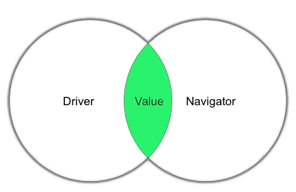
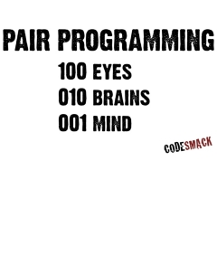

Peer Pairing and Feedback
So far in Phase 0 of my DBC experience, peer programming and feedback have been a crucial part of becoming a programmer. Peer programming has been my favorite part. I get to work with other people, some with more experience than myself and some learning to code for the first time like me. It also makes the intensive learning curve seem easier to handle because it makes it fun. You get the chance to meet new, like-minded people with similar goals to your own. Feedback is necessary to keep track of the pairings, but it also gives you insight into how others see how you're progressing. That can be helpful, but I also feel that a lot of the feedback is forced because it's mandatory.
Peer Pairing
It's been rewarding working with other people on coding problems as I learn the processes. To me, it always relates back to "two heads are better than one." I've made some friends, met people to pair "irl," and I feel more comfortable moving across the country to make a big step in my life now that I know some people before going. The only frustrating things for me so far have been, ironically enough, related to technology. Stypi or Google video chat not working as well as I would want, for example. But, all in all, peer programming has been fun, rewarding, and an important part of DBC for me.
Feedback
Feedback has been interesting to receive. I have gotten some that have been actually helpful. Most, however, seems forced and not necessarily authentic or helpful. That being said, I feel I too am guilty of writing forced feedback that's mainly centered on gratitude for meeting and working through the problems. That's not a bad thing, though. I mean, who doesn't like to be thanked and feel important. I think the most helpful feedback has been after GPS's. Probably because of a more serious and critical setting.
Overall, I think both peer pairing and feedback have been important to the learning process. Feedback has been pretty nice, but I just feel like it hasn't helped me as much though. Personally, I've enjoyed most and benefitted the most from peer pairing. It's helped me meet new people, feel more comfortable coding by coding with others, and learn quicker by having another pool of knowledge to pull from.
